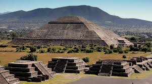

Аджанта
Аджанта - переважно буддистський храмової-монастирський печерний комплекс в Індії в штаті Махараштра.
Являє собою скелю у вигляді підкови з 29 печерами. Вони підрозділяються на два основних типи - чайтья (молитовні зали, довгасті в плані, з двома рядами стовпів, апсидою в торці) і вихара (квадратних в плані залів, оточених з трьох сторін келіями або святилищами зі статуями Будди, мають при вході портик-терасу ) - гуртожиток буддійських ченців.
Настінний розпис печер є всесвітньо відомим. Живопис, що збереглася у фрагментах - ілюстрації до буддійським легенд і міфів, але по суті він розкриває панораму суспільного життя у всій її різноманітності.

Теотіукан
«Місто-привид» Теотіуакан (Teotihuacan) розташований в 40 км на північний схід від Мехіко (Мексика) в муніципалітеті Сан-Хуан-Теотіуакан. Теотіуакан являє собою стародавнє поселення, вік якого налічує вже близько двох тисяч років, а в перекладі з ацтекського мови дослівно перекладається як «місце, де Боги торкаються землі».
Сучасний Теотіуакан - величезний археологічний комплекс, найвідомішими будівлями якого вважаються Піраміда Сонця і Піраміда Місяця.

Храмовий комплекс Саксайуаман
Недалеко від Куско (Перу), на висоті понад 3,5 тисячі метрів над рівнем моря знаходиться один з найбільш вражаючих археологічних комплексів під назвою Саксайуаман, що в перекладі з мови південноамериканського індіанського народу кечуа означає «ситий сокіл». «Візитівкою» Саксайуаман є три яруси зиґзаґоподібних стін довжиною 300 метрів і загальною висотою понад 15 метрів.
У плані Куско, що нагадує пуму, Саксайуаман є як би її зубами. За однією з версій, інки будували місто, прагнучи відобразити в його плані пуму - священне для них тварина, а стіни Саксайуаман нібито зображували зуби в пащі пуми. Інша версія свідчить, що звивиста форма стін - результат поклоніння індіанців богу блискавки.
Вчені визначають Саксайуаман як цитадель, місце дислокації гарнізону і храмовий комплекс. Історики стверджують, що Саксайуаман - фортеця, створена інками для захисту столиці своєї імперії. Історикам не вистачає фантазії, щоб уявити, за допомогою яких технічних засобів наші предки вирубали, перевезли і в віддаленому місці обробили монолітні кам'яні брили фантастичного оборонної споруди.

Піраміда Хеопса
При будівництві самого грандіозного пам'ятника античності, піраміди Хеопса, був витрачений не один рік і задіяна величезна кількість рабів, багато з яких загинули на будівництві. Так стверджували стародавні греки, серед них - і Геродот, один з перших істориків, який детально описав цю грандіозну споруду.
А от сучасні вчені не згодні з цією думкою і стверджують: працювати на будівництві бажали багато вільні єгиптяни - коли закінчувалися сільськогосподарські роботи, це була чудова можливість заробити (тут забезпечували харчуванням, одягом і житлом).
Для будь-якого єгиптянина брати участь в зведенні гробниці для свого правителя було обов'язком і справою честі, оскільки кожен з них сподівався, що його також торкнеться частинка фараоновского безсмертя: вважалося, що єгипетський цар мав право не тільки на життя після смерті, але і міг взяти з собою своїх близьких (зазвичай їх ховали в сусідніх з пірамідою гробницях).
Простим людям, правда, потрапити в загробний світ призначено не було-виняток становили хіба що раби і прислуги, яких ховали разом з правителем. Але право на надію мав кожен - а тому, коли закінчувалися роботи по дому, на протязі довгих років єгиптяни спрямовувалися в Каїр, до скелястого плато.